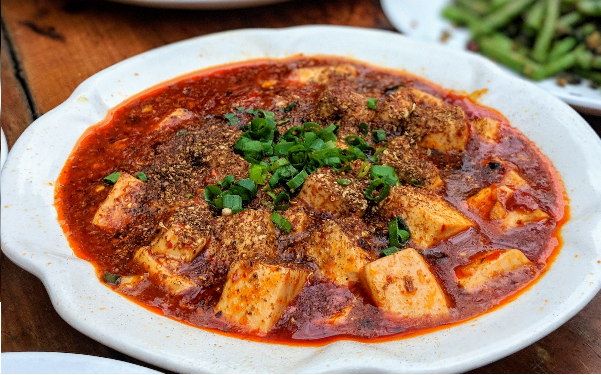
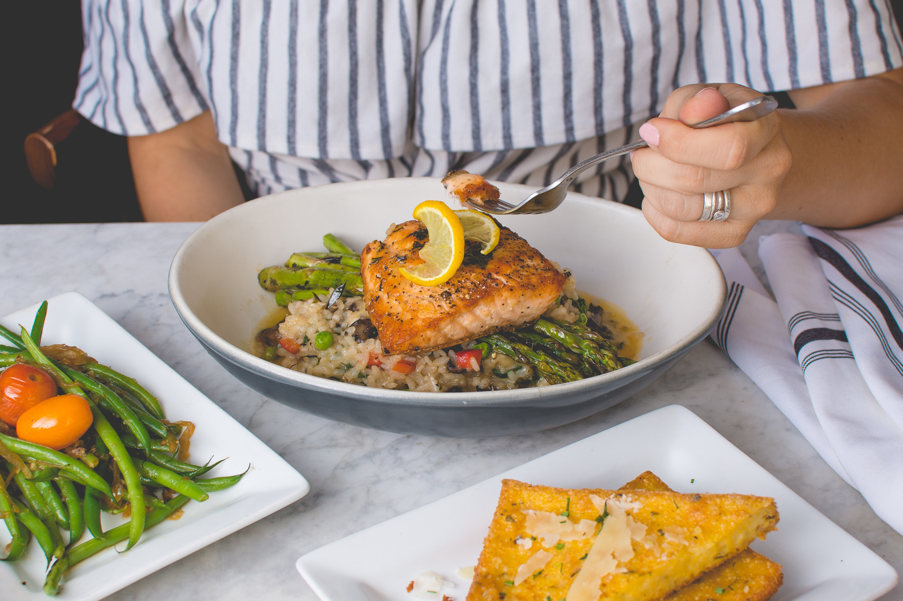
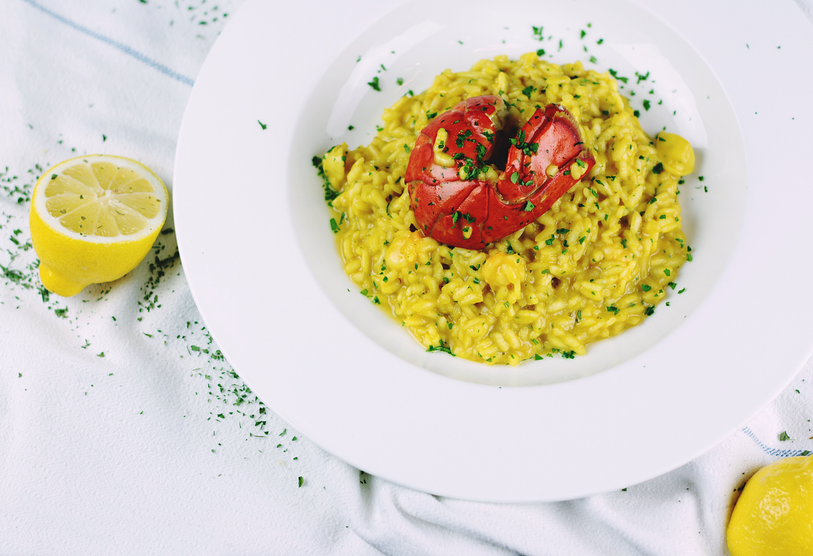
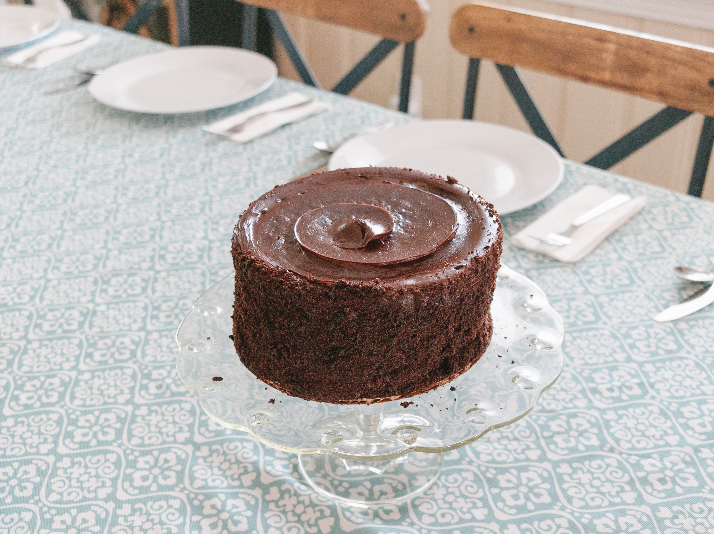
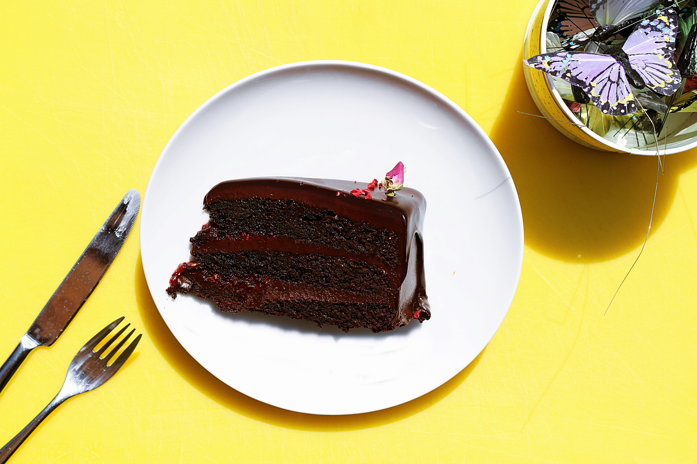

How to veganize your favourite recipes
Tikka masala curry
Non-vegan recipe

- Chicken breast 500g
- 2 onions
- 2 red peppers
- Butter 25g
- Chopped tomatoes 1 can
- Yogurt 150 ml
- Tikka masala paste 4 tbsp
- Coriander leaves
Veganized recipe

- Tofu 500g
- 2 onions
- 2 red peppers
- Margarine 25g
- Chopped tomatoes 1 can
- Coconut milk 150 ml
- Tikka masala paste 4 tbsp
- Coriander leaves
Cooking instructions
- Melt the butter/margarine in a pan, add the onions and cook till translucent
- Add the peppers and tikka masala paste and cook for 5 minutes
- Add the chicken/tofu and coat in the paste
- Add the chopped tomatoes and let to simmer for 15 minutes
- Add the yogurt/coconut milk, the coriander and season
- Serve with rice or naan bread
Cooking time: 60 minutes
Salmon risotto
Non-vegan recipe

- Salmon 225g
- Arborio rice 200g
- Butter 25g
- One onion
- One pepper
- Peas 100g
- Asparagus 100g
- One lemon
- Chopped parsley
Veganized recipe

- Mushrooms 225g
- Arborio rice 200g
- Margarine 25g
- One onion
- One pepper
- Peas 100g
- Asparagus 100g
- One lemon
- Chopped parsley
Cooking instructions
- Add the butter/margarine into a pan and fry the chopped onion in it
- Stir in the rice and the pepper and fry for two minutes
- Cover with water and let to simmer for 10 minutes
- Fry the fish/mushrooms separately in another pan
- Add the fish/mushrooms and the peas and cook for another 5 minutes
- Cook the asparagus in a different pan for 4 minutes
- Sprinkle with parsley and fresh squeezed lemon and serve
Cooking time: 40 minutes
Chocolate cake
Non-vegan recipe

- Flour 300g
- Sugar 200g
- Unsalted butter 200g
- 4 eggs
- Cocoa 30g
- Baking powder 1tsp
- Milk 200ml
- Milk chocolate 100g
- Softened butter 200g
- Icing sugar 300g
Veganized recipe

- Flour 300g
- Sugar 200g
- Margarine 200g
- No eggs
- Cocoa 30g
- Baking powder 1tsp
- Water 200ml
- Dark chocolate 100g
- Softened margarine 200g
- Icing sugar 300g
Cooking instructions
- Mix together the flour, sugar, margarine, cocoa and baking powder
- Add the milk and eggs or only the water
- Bake in two separate tins for 20 minutes at 170 degrees
- For the icing, melt the chocolate and mix with the margarine and icing sugar
- Assemble the cake and put in the freezer for an hour before serving
Cooking time: 50 minutes